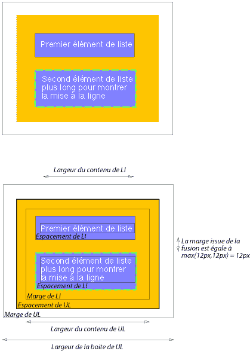

Contenu
Le modèle des boîtes de CSS décrit les boîtes rectangulaires qui sont générées pour les éléments de l'arbre du document et qui sont assemblées selon le modèle de mise en forme visuel. La boîte de page, qui en représente un cas particulier, est décrite plus en détails au chapitre sur les médias paginés.
Chaque boîte possède une aire de contenu (ex. une texte, une image, etc.) entourée en option par une aire d'espacement, une aire de bordure et une aire de marge ; Le schéma suivant illustre les relations entre ces aires et la terminologie employée pour les désigner :
On peut subdiviser la marge, la bordure et l'espacement selon qu'il s'agisse du côté gauche, droite, haut ou bas (ex. dans le schéma, "MG" mis pour marge gauche (N.D.T. margin-left), "ED" mis pour espacement droit (N.D.T. padding-right), "BH" mis pour bordure haute (N.D.T. border-top), etc.).
On appelle le périmètre de chacune des quatre aires (contenu, espacement, bordure et marge) un "bord", chaque boîte a donc quatre bords :
On peut se référer à chacun de ces bords selon qu'il se trouve du côté gauche, droite, haut ou bas.
Les dimensions de l'aire du contenu d'une boîte, celles-ci étant la largeur du contenu et la hauteur du contenu, dépendent de plusieurs facteurs : l'élément générant la boîte a-t-il une propriété 'width' ou bien 'height', la boîte contient-elle du texte ou d'autres boîtes, la boîte est-elle une table, etc. Les largeurs et hauteurs des boîtes sont traitées dans le chapitre concernant les détails du modèle de mise en forme visuel.
On obtient la largeur de la boîte en additionnant les marges, bordures et espacements gauches et droites avec le largeur du contenu. De même pour la hauteur de la boîte, en additionnant les marges, bordures et espacement hauts et bas avec la hauteur du contenu.
Le style d'arrière-plan des diverses aires d'une boîte se détermine comme suit :
Le style qui s'applique à l'arrière-plan des aires de contenu, d'espacement et de marge est défini par la propriété 'background' de l'élément qui génère la boîte. L'arrière-plan des marges est toujours transparent.
<!DOCTYPE HTML PUBLIC "-//W3C//DTD HTML 4.0//EN">
<HTML>
<HEAD>
<TITLE>Exemples de marges, d'espacements et de bordures</TITLE>
<STYLE type="text/css">
UL {
background: #ff9933; /* orange */
margin: 12px 12px 12px 12px;
padding: 3px 3px 3px 3px;
/* Les bordures ne sont pas spécifiées */
}
LI {
color: white; /* Le texte a une couleur blanche */
background: #3366cc; /* Le fond du contenu et de l'espacement sera bleu */
margin: 12px 12px 12px 12px;
padding: 12px 0px 12px 12px; /* Noter l'espacement droit 0px */
list-style: none /* Aucuns glyphes devant les items de liste */
/* Les bordures ne sont pas spécifiées */
}
LI.withborder {
border-style: dashed;
border-width: medium; /* Applique une bordure sur les quatre côtés */
border-color: green;
}
</STYLE>
</HEAD>
<BODY>
<UL>
<LI>Premier élément de liste
<LI class="withborder">Second élément de liste plus
long pour montrer la mise à la ligne.
</UL>
</BODY>
</HTML>
celui-ci aboutit à un arbre du document avec, entre autres relations, un élément UL ayant deux éléments enfants LI.
Le premier des schémas qui suivent illustre ce que cela pourrait donner. Le second montre les interactions entre les marges, espacements et bordures de l'élément UL et ceux de ses éléments enfants LI.
 [D]
Noter que :
Ces propriétés spécifient la largeur de l'aire de la marge d'une boîte. La propriété raccourcie 'margin' spécifie la valeur de la marge pour les quatre côtés à la fois, les autres propriétés fixant celle de leur côté respectif.
Les propriétés définies ici se réfèrent au type de valeur <marge-largeur>, celui-ci accepte une des valeurs suivantes :
Les valeurs négatives pour les propriétés de marge sont admises, sous réserve des implémentations particulières des agents utilisateurs.
| Valeur : | <marge-largeur> | inherit |
| Initiale : | 0 |
| S'applique à : | tous les éléments |
| Héritée : | non |
| Pourcentage : | se rapporte à la largeur du bloc conteneur |
| Média : | visuel |
Ces propriétés spécifient les marges du haut, de droite, du bas et de gauche d'une boîte.
H1 { margin-top: 2em }
| Valeur : | <marge-largeur>{1,4} | inherit |
| Initiale : | non définie pour les propriétés raccourcies |
| S'applique à : | tous les éléments |
| Héritée : | non |
| Pourcentage : | se rapporte à la largeur du bloc conteneur |
| Médias : | visuel |
La propriété raccourcie 'margin' sert à spécifier de manière groupée les propriétés 'margin-top', 'margin-right', 'margin-bottom' et 'margin-left' dans la feuille de style.
Quand il n'y a qu'une seule valeur spécifiée, celle-ci s'applique à tous les côtés. S'il y en a deux, alors la première valeur s'applique pour la marge du haut et celle du bas, et la seconde pour la marge droite et celle de gauche. Avec trois valeurs, la marge du haut reçoit la première valeur, les marges gauche et droite la deuxième et la marge du bas la troisième. Pour quatre valeurs, celles-ci s'appliquent respectivement aux marges du haut, de droite, du bas et de gauche.
BODY { margin: 2em } /* les quatres marges reçoivent la valeur 2em */
BODY { margin: 1em 2em } /* les marges du haut et du bas = 1em, de droite et de gauche = 2em */
BODY { margin: 1em 2em 3em } /* haut=1em, droite=2em & gauche=2em, bas=3em */
Cette dernière règle équivaut à l'exemple ci-dessous :
BODY {
margin-top: 1em;
margin-right: 2em;
margin-bottom: 3em;
margin-left: 2em; /* valeur copiée du côté opposé (droit) */
}
Dans cette spécification, l'expression marges de fusion signifie que les marges adjacentes (sans qu'une aire d'espacement ou de bordure ne les séparent) de deux ou plusieurs boîtes (celles-ci pouvant être l'une à côté de l'autre ou imbriquées), ces marges se combinent pour n'en former qu'une seule.
En CSS2, les marges horizontales ne fusionnent jamais.
Les marges verticales peuvent fusionner entre certaines boîtes :
Consulter les exemples de marges, d'espacements et de bordures pour une illustration de la fusion des marges.
Ces propriétés spécifient la largeur de l'aire d'espacement d'une boîte. La propriété raccourcie 'padding' spécifie la valeur de l'espacement pour les quatres côtés à la fois, les autres propriétés fixant celle de leur côté respectif.
Les propriétés définies ici se réfèrent au type de valeur <espacement-largeur>, celui-ci accepte une des valeurs suivantes :
À la différence des propriétés de marge, les valeurs d'espacement ne peuvent pas être négatives. Les valeurs de pourcentage des propriétés d'espacement, tout comme celles des propriétés de marge, se réfèrent à la largeur du bloc conteneur de la boîte générée.
Les définitions des cinq propriétés relatives à l'espacement ('padding', 'padding-top', 'padding-right', 'padding-bottom' et 'padding-left') devraient dire que celles-ci ne s'appliquent pas aux éléments de table suivants : les rangées (N.D.T. table rows), les groupes de rangées (N.D.T. row groups), les groupes de rubriques (N.D.T. header groups), les groupes de pieds de page (N.D.T. footer groups), les colonnes (N.D.T. columns) et les groupes de colonnes (N.D.T. column groups).
| Valeur : | <espacement-largeur> | inherit |
| Initiale : | 0 |
| S'applique à : | tous les éléments |
| Héritée : | non |
| Pourcentage : | se rapporte à la largeur du bloc conteneur |
| Médias : | visuel |
Ces propriétés spécifient les espacements du haut, de droite, du bas et de gauche d'une boîte.
BLOCKQUOTE { padding-top: 0.3em }
| Valeur : | <espacement-largeur>{1,4} | inherit |
| Initiale : | non définie pour les propriétés raccourcies |
| S'applique à : | tous les éléments |
| Héritée : | non |
| Pourcentage : | se rapporte à la largeur du bloc conteneur |
| Médias : | visuel |
La propriété raccourcie 'padding' sert à spécifier de manière groupée les propriétés 'padding-top', 'padding-right', 'padding-bottom' et 'padding-left' dans la feuille de style.
Quand il n'y a qu'une seule valeur spécifiée, celle-ci s'applique à tous les côtés. S'il y en a deux, alors la première valeur s'applique pour l'espacement du haut et celui du bas, et la seconde pour l'espacement de droite et celui de gauche. Avec trois valeurs, l'espacement du haut reçoit la première valeur, les espacements gauche et droite la deuxième et l'espacement du bas la troisième. Pour quatre valeurs, celles-ci s'appliquent respectivement aux espacements du haut, de droite, du bas et de gauche.
La couleur ou l'image de la surface de l'aire d'espacement sont indiquées avec la propriété 'background' :
H1 {
background: white;
padding: 1em 2em;
}
Dans cet exemple, on spécifie un espacement vertical de '1em' ('padding-top' et 'padding-bottom') et un espacement horizontal de '2em' ('padding-right' et 'padding-left'). L'unité 'em' s'entend relativement à la taille de la police de l'élément : une valeur '1em' correspond à la taille de la police utilisée.
Ces propriétés spécifient l'épaisseur, la couleur et le style de l'aire de bordure d'une boîte. Celles-ci s'appliquent à tous les éléments.
Remarque : Plus particulièrement en HTML, les agents utilisateurs peuvent rendre les bordures de certains éléments (ex. les boutons, les menus, etc.) dans un aspect différent de celui des éléments "ordinaires".
Ces propriétés spécifient l'épaisseur de l'aire de bordure. Les propriétés définies ici se réfèrent au type de valeur <bordure-épaisseur>, celui-ci accepte l'une des valeurs suivantes :
L'interprétation des trois premières valeurs dépend de l'agent utilisateur. Cependant, celui-ci doit respecter les directives suivantes :
'thin' <='medium' <= 'thick'.
De plus, leurs épaisseurs doivent rester constantes dans tout le document.
| Valeur : | <bordure-épaisseur> | inherit |
| Initiale : | medium |
| S'applique à : | tous les éléments |
| Héritée : | non |
| Pourcentage : | sans objet |
| Médias : | visuel |
Ces propriétés spécifient les valeurs d'épaisseur des bordures du haut, de droite, du bas et de gauche d'une boîte.
| Valeur : | <bordure-épaisseur>{1,4} | inherit |
| Initiale : | voir les propriétés individuelles |
| S'applique à : | tous les éléments |
| Héritée : | non |
| Pourcentage : | sans objet |
| Médias : | visuel |
Cette propriété raccourcie sert à spécifier de manière groupée les propriétés 'border-top-width', 'border-right-width', 'border-bottom-width' et 'border-left-width' dans la feuille de style.
Quand il n'y a qu'une seule valeur spécifiée, celle-ci s'applique à tous les côtés. S'il y en a deux, alors la première valeur s'applique pour la bordure du haut et celle du bas, et la seconde pour la bordure de droite et celle de gauche. Avec trois valeurs, la bordure du haut reçoit la première valeur, les bordures gauche et droite la deuxième et la bordure du bas la troisième. Pour quatre valeurs, celles-ci s'appliquent respectivement aux bordures du haut, de droite, du bas et de gauche.
Les commentaires dans l'exemple ci-dessous précisent les valeurs des bordures du haut, de droite, du bas et de gauche :
H1 { border-width: thin } /* thin thin thin thin */
H1 { border-width: thin thick } /* thin thick thin thick */
H1 { border-width: thin thick medium } /* thin thick medium thick */
Ces propriétés spécifient la couleur des bordures d'une boîte.
| Valeur : | <couleur> | transparent | inherit |
| Initiale : | la valeur de la propriété 'color' |
| S'applique à : | tous les éléments |
| Héritée : | non |
| Pourcentage : | sans objet |
| Médias : | visuel |
| Valeur : | [ <couleur> |
| Initiale : | voir les propriétés individuelles |
| S'applique à : | tous les éléments |
| Héritée : | non |
| Pourcentage : | sans objet |
| Médias : | visuel |
La propriété 'border-color' spécifie la couleur des quatre côtés de la bordure. Voici la signification des valeurs que celle-ci admet :
La propriété 'border-color' admet une à quatre valeurs, les valeurs étant appliquées sur les quatres côtés de la bordure de la même façon que pour la propriété 'border-width' définie plus haut.
Quand, pour un élément, aucune valeur de couleur n'est spécifiée par une propriété de bordure, les agents utilisateurs doivent utiliser celle de la propriété 'color' de cet élément comme valeur calculée pour la couleur de bordure.
Ici, la bordure aura l'aspect d'un trait plein noir.
P {
color: black;
background: white;
border: solid;
}
Ces propriétés spécifient le dessin des bordures d'une boîte (en trait plein, trait double, trait pointillé, etc.). Les propriétés définies ici se réfèrent au type de valeur <bordure-style>, celui-ci accepte l'une des valeurs suivantes :
Les bordures sont dessinées en surimpression sur l'arrière-plan de la boîte. La couleur des bordures dessinées pour les valeurs
'groove', 'ridge', 'inset' et 'outset' dépend de la propriété 'color' de l'élément
devrait se baser sur la propriété 'border-color' de l'élément ; cependant les agents utilisateurs peuvent
employer leur propre algorithme pour déterminer les couleurs qui vont être appliquées.
Par exemple, si la propriété 'border-color' a la valeur 'silver', l'agent utilisateur pourrait simuler une bordure pentue
à l'aide d'un dégradé de blanc à gris foncé.
Les agents utilisateurs conformes peuvent remplacer l'interprétation des valeurs 'dotted', 'dashed', 'double', 'groove', 'ridge', 'inset' et 'outset' par celle de la valeur 'solid'.
| Valeur : | <bordure-style> | inherit |
| Initiale : | none |
| S'applique à : | tous les éléments |
| Héritée : | non |
| Pourcentage : | sans objet |
| Médias : | visuel |
| Valeur : | <bordure-style>{1,4} | inherit |
| Initial: | voir les propriétés individuelles |
| S'applique à : | tous les éléments |
| Héritée : | non |
| Pourcentage : | sans objet |
| Médias : | visuel |
La propriété 'border-style' admet une à quatre valeurs, les valeurs étant appliquées sur les quatres côtés de la bordure de la même façon que pour la propriété 'border-width' définie plus haut.
#xy34 { border-style: solid dotted }
Dans cet exemple, les bordures horizontales auront la valeur 'solid' et les verticales la valeur 'dotted'.
La valeur initiale de style de bordure étant 'none', aucune bordure ne sera visible si on ne spécifie pas de valeur de style pour celle-ci.
| Valeur : | [ |
| Initiale : | voir les propriétés individuelles |
| S'applique à : | tous les éléments |
| Héritée : | non |
| Pourcentage : | sans objet |
| Médias : | visuel |
Cette propriété raccourcie spécifie les épaisseurs, les styles et les couleurs des bordures du haut, de droite, du bas et de gauche d'une boîte.
H1 { border-bottom: thick solid red }
Cette règle-ci va appliquer une épaisseur, un style et une couleur à la bordure du bas, celle sous l'élément H1. Les valeurs omises dans la déclaration sont censées garder leur valeur initiale. Dans la règle suivante, comme celle-ci ne précise pas de valeur de couleur pour la bordure, celle-ci prendra la valeur de la propriété 'color' de l'élément H1 :
H1 { border-bottom: thick solid }
| Valeur : | [ |
| Initiale : | voir les propriétés individuelles |
| S'applique à : | tous les éléments |
| Héritée : | non |
| Pourcentage : | sans objet |
| Médias : | visuel |
La propriété raccourcie 'border' spécifie les mêmes épaisseurs, couleurs et styles pour les quatre côtés d'une boîte. À la différence des propriétés 'margin' et 'padding', cette propriété 'border' ne permet pas de donner des valeurs propres à chacune des quatre bordures. Pour cela, il faut employer l'une, ou plusieurs, des propriétés individuelles de bordure.
Par exemple, la première règle équivaut aux quatre qui la suivent :
P { border: solid red }
P {
border-top: solid red;
border-right: solid red;
border-bottom: solid red;
border-left: solid red
}
Dans une certaine mesure, les actions des propriétés se recoupent, aussi l'ordre dans lequel elles surviennent revêt de l'importance.
Considérons cet exemple :
BLOCKQUOTE {
border-color: red;
border-left: double;
color: black
}
Ici, la valeur de la couleur de bordure gauche est 'black', et celles des autres bordures est 'red'. Ceci est causé par 'border-left' spécifiant l'épaisseur, le style et la couleur. Aucune valeur de couleur n'étant spécifiée, celle-ci est héritée de la propriété 'color'. Que cette dernière survienne après la propriété 'border-left' ne fait pas de différence.